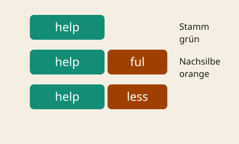

Werkzeug 2: Ein unbekanntes Wort erschließen
Mit einem KI-Tutor lernen
Ein KI-Tutor erklärt dir diese Seite und hilft dir bei den Aufgaben. Wähl deinen Assistenten:
Mit Claude öffnen Mit ChatGPT öffnen Mit Mistral Vibe öffnen
Du nutzt dein eigenes Konto beim Anbieter. Der Assistent ist kein Angebot von lernapps.net: lernapps liefert nur Inhalte und Aufgaben. Die Wahl gilt für alle Seiten, nur auf diesem Gerät.
Ein Wort, das Sophie nicht kennt
Im Chat steht ein Wort, das Sophie nicht kennt. Sie sucht es nicht gleich im Wörterbuch. Lies den Chat und achte darauf, was sie zuerst tut. Das kannst du danach: Du zerlegst ein unbekanntes Wort und erschließt seine Bedeutung. Du bildest auch selbst neue Wörter.
(1) Amir: Peter was careless yesterday. He left his bag in the park.
(2) Sophie: Careless? I don't know this word.
(3) Mr Hill: Don't look it up yet. Look at the word first. Cut off the end.
(4) Sophie: Care … and less. I know "care"! And I know "careful", too.
(5) Mr Hill: Good. Now think: what does "-ful" do? And what does "-less" do?
(6) Sophie: Careful means "with care". So "-less" means … without?
(7) Ellie: Yes! Careless means without care. Peter didn't think about his bag.
(8) Sophie: Great. A new word, and I didn't use a dictionary!
| Englisch | Deutsch |
|---|---|
| careless | unvorsichtig, nachlässig |
Aufgabe
Lösung
Sie fragt nach der deutschen Übersetzung.
Sie fragt nicht nach der Übersetzung. Mr Hill rät ihr, zuerst das Wort anzusehen.
Sie schneidet das Ende ab und sucht ein Wort, das sie kennt. richtige Antwort
Sie erkennt care und kennt auch careful.
Sie schlägt das Wort im Wörterbuch nach.
Mr Hill sagt, sie soll das noch nicht tun.
Zuerst suchst du im unbekannten Wort einen Teil, den du schon kennst.
Die Werkzeugkarte Wortfamilie

© CC-BY-4.0Eine Wortfamilie hat einen gemeinsamen Stamm.
| Schritt | Was du tust | Beispiel |
|---|---|---|
| 1 | Schneide Anfang und Ende ab: die Vorsilbe und die Nachsilbe. | help + ful |
| 2 | Suche den Stamm, den du schon kennst. Der Stamm ist der Teil, der bleibt. | help |
| 3 | Frage, was die Silbe ändert, und setze die Bedeutung zusammen. | -ful: voller · -less: ohne · un-: nicht · -er: Person, die etwas tut |
Merke
Wörter mit demselben Stamm sind eine Wortfamilie. Eine Vorsilbe steht vor dem Stamm (un-), eine Nachsilbe steht dahinter (-ful, -less, -er). Rate nicht nur: Prüfe immer, ob die Bedeutung in den Satz passt.
Übung
Aufgabe
Zerlege die Wörter in Stamm und Vor- oder Nachsilbe.
Tipp
Die Silbe steht am Anfang oder am Ende des Wortes. Der Rest ist der Stamm.
| Wort | Stamm | Vor- oder Nachsilbe |
|---|---|---|
| hopeless | … | … |
| colourful | … | … |
| unhappy | … | … |
| teacher | … | … |
Lösung
- hopeless · hope · -less
- colourful · colour · -ful
- unhappy · happy · un-
- teacher · teach · -er
Aufgabe
Lösung
Richtige Antwort: -ful – voller; -less – ohne; un- – nicht; -er – Person, die etwas tut
Eine Vor- oder Nachsilbe hat meistens dieselbe Bedeutung, auch bei neuen Wörtern.
Aufgabe
Bilde das Wort. Ergänze die fehlende Vor- oder Nachsilbe.
Tipp
Frage dich bei jeder Aufgabe, was die Silbe ändert.
- full of colour → The picture is colour….
- without hope → The plan is hope….
- not happy → Peter is …happy.
- a person who works → A work… is a person who works.
Lösung
- The picture is colourful.
- The plan is hopeless.
- Peter is unhappy.
- A worker is a person who works.
Aufgabe
Lösung
Der Hamster hat ein kleines Zuhause.
-less heißt nicht weniger, sondern ohne.
Der Hamster hat kein Zuhause. richtige Antwort
home ist der Stamm, -less heißt ohne.
Der Hamster hat ein schönes Zuhause.
-less heißt ohne, nicht schön. Mit -ful würde es voller heißen, aber homeful gibt es nicht.
homeless heißt ohne Zuhause.
Aufgabe
Bilde das englische Wort aus Stamm und Vor- oder Nachsilbe.
Tipp
Stamm plus Silbe, ohne Leerzeichen.
- nützlich (voller Nutzen)
- unordentlich (nicht ordentlich)
- nutzlos (ohne Nutzen)
Lösung
- useful
- untidy
- useless
Selbst Wörter bilden
Offene Aufgabe
Bilde zum Stamm play zwei weitere Wörter der Wortfamilie und schreibe mit ihnen zwei englische Sätze.
Eine gute Antwort enthält:
Lösung
Ein Beispiel: A player is a person who plays games. The dog is playful.
Wie es weitergeht
Zwei Werkzeuge liegen im Koffer. Sie helfen dir, wenn dir ein Wort fehlt oder du eines nicht kennst. Im nächsten Kapitel „Englisch und Deutsch vergleichen“ nimmst du den Koffer mit.
Fehler gefunden oder eine Idee für diese App?